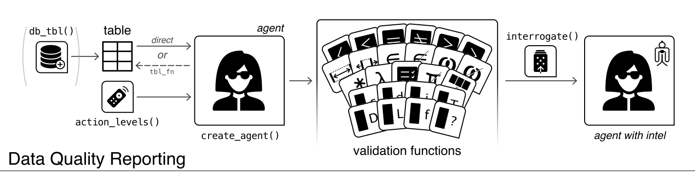
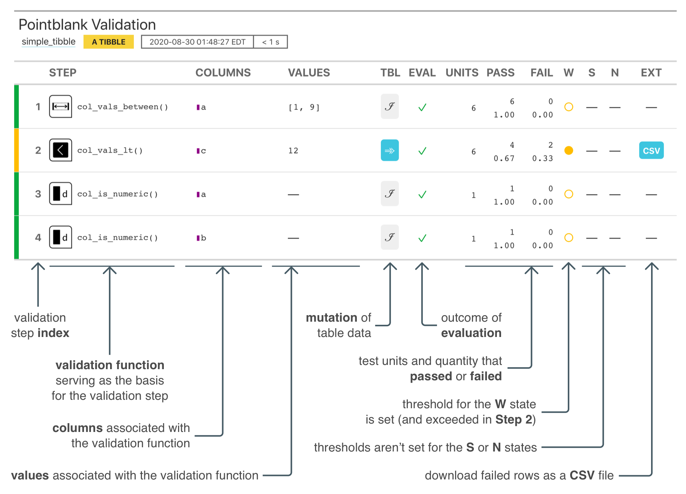
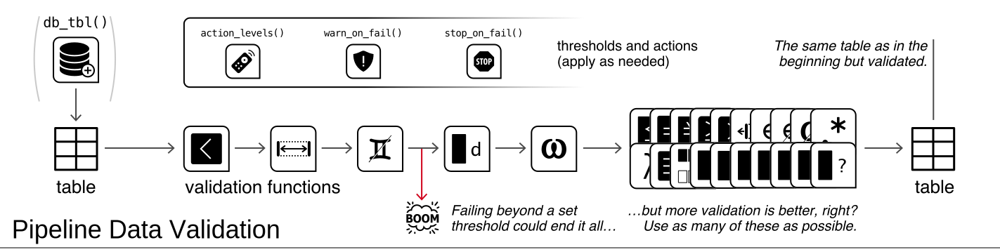
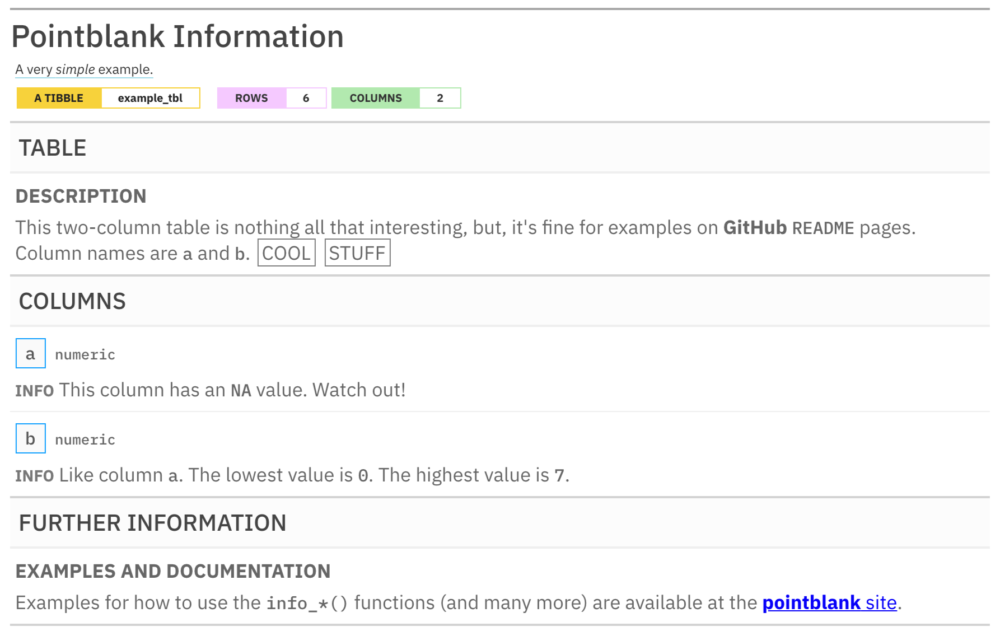

With the pointblank package it’s really easy to methodically validate your data whether in the form of data frames or as database tables. On top of the validation toolset, the package gives you the means to provide and keep up-to-date with the information that defines your tables.
For table validation, the agent object works with a large collection of simple (yet powerful!) validation functions. We can enable much more sophisticated validation checks by using custom expressions, segmenting the data, and by selective mutations of the target table. The suite of validation functions ensures that everything just works no matter whether your table is a data frame or a database table.
Sometimes, we want to maintain table information and update it when the table goes through changes. For that, we can use an informant object plus associated functions to help define the metadata entries and present it as a data dictionary. Just like we can with validation, pointblank offers easy ways to have the metadata updated so that this important documentation doesn’t become stale.

TABLE VALIDATIONS WITH AN AGENT AND DATA QUALITY REPORTING
Data validation can be carried out in Data Quality Reporting workflow, ultimately resulting in the production of of a data quality analysis report. This is most useful in a non-interactive mode where data quality for database tables and on-disk data files must be periodically checked. The pointblank agent is given a collection of validation functions to define validation steps. We can get extracts of data rows that failed validation, set up custom functions that are invoked by exceeding set threshold failure rates, etc. Want to email the report regularly (or, only if certain conditions are met)? Yep, you can do all that.
Here is an example of how to use pointblank to validate a local table with an agent.
# Generate a simple `action_levels` object to
# set the `warn` state if a validation step
# has a single 'fail' test unit
al <- action_levels(warn_at = 1)
# Create a pointblank `agent` object, with the
# tibble as the target table. Use three validation
# functions, then, `interrogate()`. The agent will
# then have some useful intel.
agent <-
dplyr::tibble(
a = c(5, 7, 6, 5, NA, 7),
b = c(6, 1, 0, 6, 0, 7)
) %>%
create_agent(
label = "A very *simple* example.",
actions = al
) %>%
col_vals_between(
vars(a), 1, 9,
na_pass = TRUE
) %>%
col_vals_lt(
vars(c), 12,
preconditions = ~ . %>% dplyr::mutate(c = a + b)
) %>%
col_is_numeric(vars(a, b)) %>%
interrogate()The reporting’s pretty sweet. We can get a gt-based report by printing an agent.

The pointblank package is designed to be both straightforward yet powerful. And fast! Local data frames don’t take very long to validate extensively and all validation checks on remote tables are done entirely in-database. So we can add dozens or even hundreds of validation steps without any long waits for reporting.
Should you want to perform validation checks on database or Spark tables, provide a tbl_dbi or tbl_spark object to create_agent(). The pointblank package currently supports PostgreSQL. MySQL, MariaDB, Microsoft SQL Server, Google BigQuery, DuckDB, SQLite, and Spark DataFrames (through the sparklyr package).
Here are some validation reports for the considerably larger intendo::intendo_revenue table.



VALIDATIONS DIRECTLY ON DATA
The Pipeline Data Validation workflow uses the same collection of validation functions but without need of an agent. This is useful for an ETL process where we want to periodically check data and trigger warnings, raise errors, or write out logs when exceeding specified failure thresholds. It’s a cinch to perform checks on import of the data and at key points during the transformation process, perhaps stopping data flow if things are unacceptable with regard to data quality.
The following example uses the same three validation functions as before but, this time, we use them directly on the data. The validation functions act as a filter, passing data through unless execution is stopped by failing validations beyond the set threshold. In this workflow, by default, an error will occur if there is a single ‘fail’ test unit in any validation step:
dplyr::tibble(
a = c(5, 7, 6, 5, NA, 7),
b = c(6, 1, 0, 6, 0, 7)
) %>%
col_vals_between(
vars(a), 1, 9,
na_pass = TRUE
) %>%
col_vals_lt(
vars(c), 12,
preconditions = ~ . %>% dplyr::mutate(c = a + b)
) %>%
col_is_numeric(vars(a, b))Error: Exceedance of failed test units where values in `c` should have been < `12`.
The `col_vals_lt()` validation failed beyond the absolute threshold level (1).
* failure level (2) >= failure threshold (1) We can downgrade this error to a warning with the warn_on_fail() helper function (assigning it to actions). In this way, the data will always be returned, but warnings will appear.
# The `warn_on_fail()` function is a nice
# shortcut for `action_levels(warn_at = 1)`;
# it works great in this data checking workflow
# (and the threshold can still be adjusted)
dplyr::tibble(
a = c(5, 7, 6, 5, NA, 7),
b = c(6, 1, 0, 6, 0, 7)
) %>%
col_vals_between(
vars(a), 1, 9,
na_pass = TRUE,
actions = warn_on_fail()
) %>%
col_vals_lt(
vars(c), 12,
preconditions = ~ . %>% dplyr::mutate(c = a + b),
actions = warn_on_fail()
) %>%
col_is_numeric(
vars(a, b),
actions = warn_on_fail()
)#> # A tibble: 6 x 2
#> a b
#> <dbl> <dbl>
#> 1 5 6
#> 2 7 1
#> 3 6 0
#> 4 5 6
#> 5 NA 0
#> 6 7 7
Warning message:
Exceedance of failed test units where values in `c` should have been < `12`.
The `col_vals_lt()` validation failed beyond the absolute threshold level (1).
* failure level (2) >= failure threshold (1) Should you need more fine-grained thresholds and resultant actions, the action_levels() function can be used to specify multiple failure thresholds and side effects for each failure state. However, with warn_on_fail() and stop_on_fail() (applied by default, with stop_at = 1), you should have good enough options for this validation workflow.
VALIDATIONS IN R MARKDOWN DOCUMENTS
Using pointblank in an R Markdown workflow is enabled by default once the pointblank library is loaded. The framework allows for validation testing within specialized validation code chunks where the validate = TRUE option is set. Using pointblank validation functions on data in these marked code chunks will flag overall failure if the stop threshold is exceeded anywhere. All errors are reported in the validation code chunk after rendering the document to HTML, where green or red status buttons indicate whether all validations succeeded or failures occurred. Click them to reveal the otherwise hidden validation statements and any associated error messages.

The above R Markdown document is available as a template in the RStudio IDE; it’s called Pointblank Validation.
TABLE INFORMATION
Table information can be synthesized in an information management workflow, giving us a snapshot of a data table we care to collect information on. The pointblank informant is fed a series of info_*() functions to define bits of information about a table. This info text can pertain to individual columns, the table as a whole, and whatever additional information makes sense for your organization. We can even glean little snippets of information (like column stats or sample values) from the target table with info_snippet() and the snip_*() functions and mix them into the data dictionary wherever they’re needed.
Here is an example of how to use pointblank to incorporate pieces of info text into an informant object.
# Create a pointblank `informant` object, with the
# tibble as the target table. Use a few information
# functions and end with `incorporate()`. The informant
# will then show you information about the tibble.
informant <-
dplyr::tibble(
a = c(5, 7, 6, 5, NA, 7),
b = c(6, 1, 0, 6, 0, 7)
) %>%
create_informant(
label = "A very *simple* example.",
tbl_name = "example_tbl"
) %>%
info_tabular(
description = "This two-column table is nothing all that
interesting, but, it's fine for examples on **GitHub**
`README` pages. Column names are `a` and `b`. ((Cool stuff))"
) %>%
info_columns(
columns = "a",
info = "This column has an `NA` value. [[Watch out!]]<<color: red;>>"
) %>%
info_columns(
columns = "a",
info = "Mean value is `{a_mean}`."
) %>%
info_columns(
columns = "b",
info = "Like column `a`. The lowest value is `{b_lowest}`."
) %>%
info_columns(
columns = "b",
info = "The highest value is `{b_highest}`."
) %>%
info_snippet(
snippet_name = "a_mean",
fn = ~ . %>% .$a %>% mean(na.rm = TRUE) %>% round(2)
) %>%
info_snippet(snippet_name = "b_lowest", fn = snip_lowest("b")) %>%
info_snippet(snippet_name = "b_highest", fn = snip_highest("b")) %>%
info_section(
section_name = "further information",
`examples and documentation` = "Examples for how to use the
`info_*()` functions (and many more) are available at the
[**pointblank** site](https://rstudio.github.io/pointblank/)."
) %>%
incorporate()By printing the informant we get the table information report.

Here is a link to a hosted information report for the intendo::intendo_revenue table:

TABLE SCANS
We can use the scan_data() function to generate a comprehensive summary of a tabular dataset. This allows us to quickly understand what’s in the dataset and it helps us determine if there are any peculiarities within the data. Scanning the dplyr::storms dataset with scan_data(tbl = dplyr::storms) gives us an interactive HTML report. Here are a few of them, published in RPubs:


Database tables can be used with scan_data() as well. Here are two examples using (1) the full_region table of the Rfam database (hosted publicly at mysql-rfam-public.ebi.ac.uk) and (2) the assembly table of the Ensembl database (hosted publicly at ensembldb.ensembl.org).


OVERVIEW OF PACKAGE FUNCTIONS
There are many functions available in pointblank for understanding data quality and creating data documentation. Here is an overview of all of them, grouped by family. For much more information on these, visit the documentation website or take a Test Drive in the Posit Cloud project.

DISCUSSIONS
Let’s talk about data validation and data documentation in pointblank Discussions! It’s a great place to ask questions about how to use the package, discuss some ideas, engage with others, and much more!
INSTALLATION
Want to try this out? The pointblank package is available on CRAN:
install.packages("pointblank")You can also install the development version of pointblank from GitHub:
devtools::install_github("rstudio/pointblank")If you encounter a bug, have usage questions, or want to share ideas to make this package better, feel free to file an issue.
Code of Conduct
Please note that the gt project is released with a contributor code of conduct.
By participating in this project you agree to abide by its terms.
📄 License
pointblank is licensed under the MIT license. See the LICENSE.md file for more details.
© Posit Software, PBC.
🏛️ Governance
This project is primarily maintained by Rich Iannone. Other authors may occasionally assist with some of these duties.